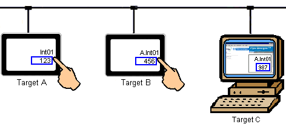
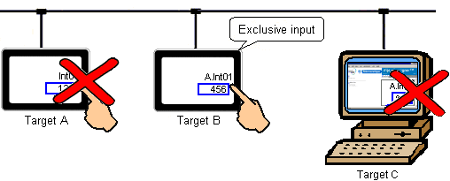
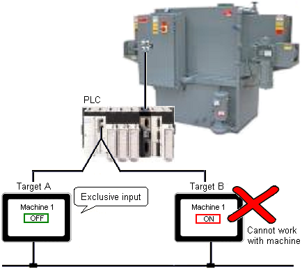
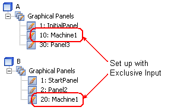

|
|
|
|
|
|
|
|
When your project uses data sharing, you can have multiple target machines set up to enter data to the same variable. In the following example, targets A, B, and C (Web Gate client) are set up with numeric inputs associated with variable Int01, which resides on target A.

If multiple users try to change the same variable from multiple targets at the same time, the results would be unpredictable. To make sure the target machines operate consistently and predictably, you can use exclusive input.
Targets A, B, and C (Web Gate client), have an exclusive input panels where you can input values to A.Int01.

By using exclusive input in this way, you ensure only one target machine or Web Gate client can edit the value in A.Int01.
You don't have to be working with data-shared variables to set up exclusive input. There may be a situation when you want to block other types of inputs from other target machines.
In the diagram below, there are two different targets that communicate with the same PLC, which is used to control a piece of heavy machinery.

If an operator wants to perform some maintenance work and uses target A to turn off the main switch for the machine, the operator does not want anyone else to turn the machine on. To prevent an accident, you can set up exclusive input on panels in targets A and B.

By assigning exclusive input to all panels that can turn the machine on or off, at run time when one of the targets is working with the machine, other targets in the system are blocked from doing the same. Exclusive input can make sure operators are safe to conduct their maintenance work.

In this scenario, Inactivity Timeout should be disabled.